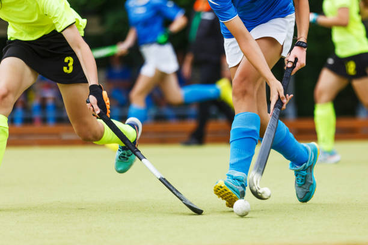

Hockey is a family of stick sports where two opposing teams use hockey sticks to propel a ball or disk into a goal. There are many types of hockey, and the individual sports vary in rules, numbers of players, apparel, and playing surface. Hockey includes both summer and winter variations that may be played on an outdoor field, sheet of ice, or an indoor gymnasium. Some forms of hockey require skates, either inline, roller or ice, while others do not. The various games are usually distinguished by proceeding the word hockey with a qualifier, as in field hockey, ice hockey, roller hockey, rink hockey, or floor hockey. In each of these sports, two teams play against each other by trying to manoeuvre the object of play, either a type of ball or a disk (such as a puck), into the opponent's goal using a hockey stick. Two notable exceptions use a straight stick and an open disk (still referred to as a puck) with a hole in the center instead. The first case is a style of floor hockey whose rules were codified in 1936 during the Great Depression by Canada's Sam Jacks. The second case involves a variant which was later modified in roughly the 1970s to make a related game that would be considered suitable for inclusion as a team sport in the newly emerging Special Olympics. The floor game of gym ringette, though related to floor hockey, is not a true variant because it was designed in the 1990s and modelled on the Canadian ice skating team sport of ringette, which was invented in Canada in 1963. Ringette was also invented by Sam Jacks, the same Canadian who codified the rules for the open disk style of floor hockey in 1936. Certain sports which share general characteristics with the forms of hockey, but are not generally referred to as hockey include lacrosse, hurling, camogie, and shinty.
